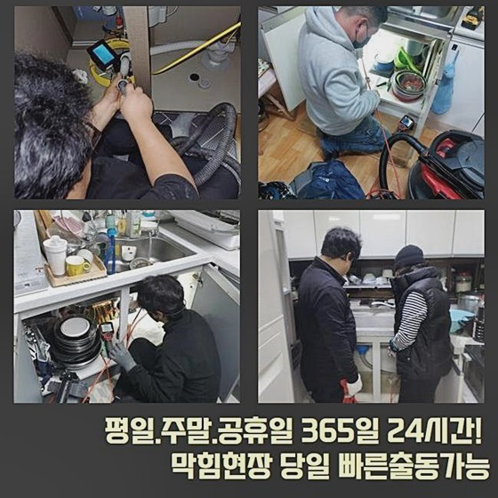
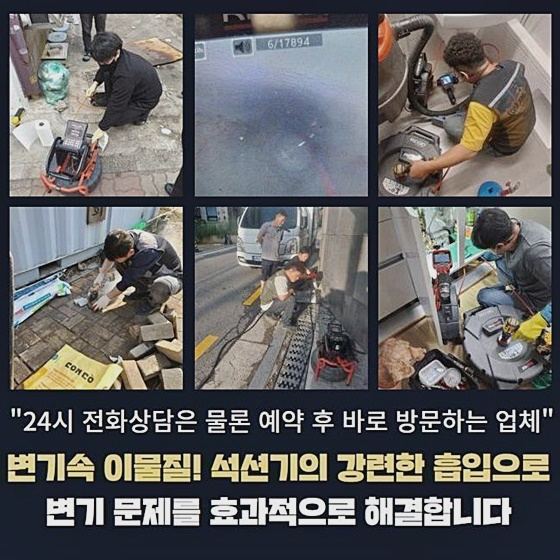
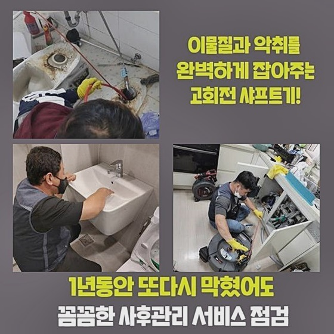
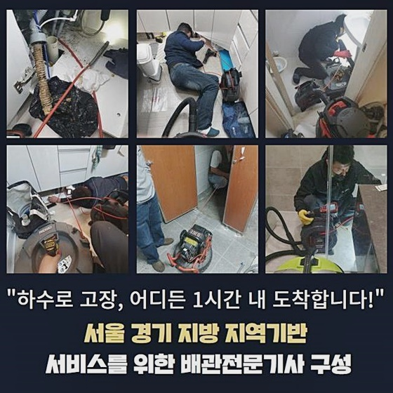
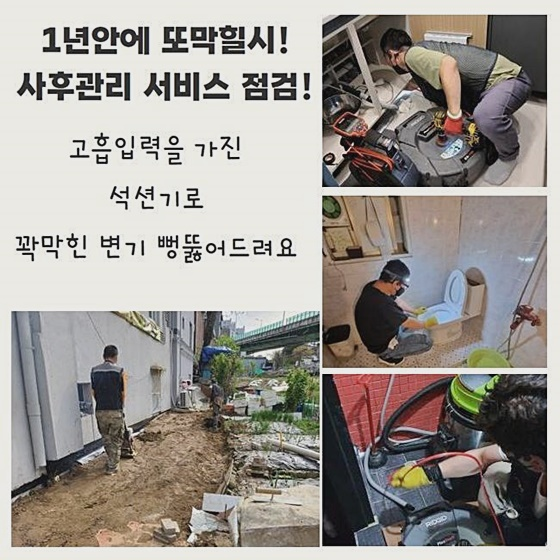
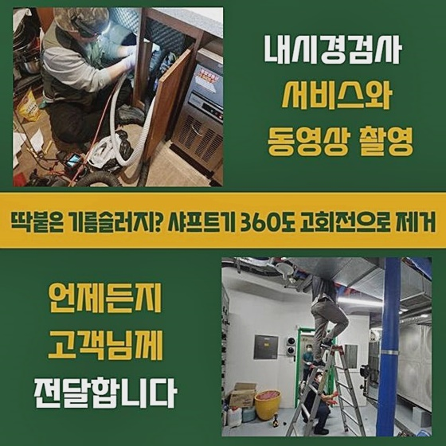

🏠 관문동싱크대막힘 별양동 횡주관청소 출장설비
용인시 처인구 배관막힘 전문 시공 후기

📋 작업 개요
- 위치: 용인시 처인구, 수원시 영통구, 화성시 동탄
- 서비스 유형: 배관막힘, 고압세척
- 작업 일시:
- 업체명: 하수구수사대 (010-5615-2118)
🔍 문제 상황
관문동싱크대막힘 별양동 횡주관청소 출장설비
집안에 설치된 하수관을 이용할 때면 여러가지 이유들이 모이다가 결국 하수가 마비되는 사건이 눈앞에 펼쳐지기도 합니다
아파트나 빌라 상가주택 등 다수의 장소들에서 빠짐 없이 하수구가 마비되는 난감한 상황은 빈번하게 촉발되는 일이죠
고장난 설비를 고쳐주는 사람을 구인하고 계시다면 맞춤 도구들을 지니고 있고 무엇이 잘못됐나 점검하고 하자 없는 시공력을 보이는 곳을 신중하게 선정하셔야 합니다!
얼마 전 내방드린 현장은 비밀번호가 걸려있지 않은 공공적인 화장실이었으며 물이 흘러가지 않는다고 위급하다고 알려주셨습니다
입점한 점포직원분과 방문객들이 같이 활용하는 곳의 특성상 거주목적의 건물 보다는 막혀서 생기는 문제들이 자주 접수되곤 합니다
오늘 현장을 담당하신 고객님은 단순하게 막힌 적은 많았어도 고장이 났던 경험은 난생 처음 마주하게 된 것이라며 곤란함을 표하셨네요
빌딩을 공유하는 사람들이 필수적으로 들리게 되는 장소이기에 더욱 빠른 처리에 바로 돌입해야 한다고 판별되어서 곧장 오류를 교정해 나갔어요
막힘 현상이라는 공통적인 상담을 통해서 찾아가 보면 막히는 근원부들은 의외로 다양한 형태로 존재하기에 다중적인 검사를 거치면서 유발 인자를 검색해 주는 단계를 기반으로 삼아야 합니다
장소에 도착하고 관련 도구들을 셋팅해두고 무슨 문제가 내부에 자리했으며 어떤 작업이 괜찮을지를 이리저리 뜯어보았습니다
여러 하수구를 뚫다보면 내부에서 기기를 넣는 것으로도 물길이 회복되는 곳이 내외부의 하수구를 전적으로 판별하여 작업해야 완수되는 경우도 있으니까요

🔎 원인 분석
💡 전문가 진단: 정밀 진단 장비를 사용하여 슬러지의 고착 여부를 판명하고 타격/세척 작업을 실시했습니다.
오늘 소개드리는 곳 역시 옥외 하수구까지도 진작에 문제점이 발생했기에 처리 과정의 난이도가 식은 죽 먹기는 아니었습니다
하수구에서 올라오는 구린내가 공기에 자욱하게 퍼져버린 상황이었고 거기다 범람 현상까지 존재했기 때문에 원인 조사에 근본을 두고 스타트를 끊어야 했어요
코를 틀어막을 수준의 악취가 느껴지는 근원부터 추적하여 중점을 두고 확인해 보았더니 혼탁한 물이 고여있었고 각종 이물질이 가득하여 물이 나가기 곤혹스러운 상태다 싶었어요
고장나는 배관을 보면 메인 배관의 굵은 가지로 이어져있는 구조라면 한 구멍만 막히더라도 전체적인 작동 불능이 충분히 생길 수 있습니다
진단을 시작한 해당 입구만 점검해 봐도 여건이 중태에 빠졌다는 것을 감을 잡을 수 있었는데요
파이프 안에 많은 토사가 상당히 쌓여있는 모습이었고 여러 찌꺼기들이 뭉쳐있는 바람에 카메라를 밀어 넣는 일도 힘들만큼 통로가 협소했어요
일단 시야가 트여야 일이 되니 상단의 찌꺼기를 걷어올리고 장치가 진입할 수 있는 길목을 열어서 안을 디테일하게 탐방해 보기 시작했죠!
급작스러운 고장으로 인해 정보를 검색하시던 고객님은 임시적으로라도 뚫어뻥같은 도구로 작업을 도전하시기도 하는데요
다양한 매체에서 추천하는 어설프게 청소하는 것으로는 퀄리티 높은 배관청소는 성사되기가 힘들어요
내부에 축적된 침전물들은 시간이 흐르면 흐를수록 덩어리화되고 배관 벽에 접착되면서 분리하는 도중에 심한 마찰을 가중시킬 수 있어요
게다가 막혀있는 정도를 더 복잡하게 꼬이도록 만들 수 있기 때문에 반드시 숙련도가 높은 숙련자에게 설비를 맡겨서 해소를 해보셔야 합니다
마치 청소기처럼 쓰는 석션기는 흡수능력이 출중하기 때문에 내면에 들어차 있는 배관 속 쓰레기를 모조리 빼낼 수 있게 됩니다

🔧 작업 과정
오물들을 일차적으로 필터링하는 커버를 모두 벗기고 석션을 간단히 실행했는데도 한 통에 가득 찰 정도로 여러 종류의 이물들이 외부로 쏟아져 나왔더라고요
이어서 바깥과 이어져 있는 경로도 빠지지 않고 진단을 마쳐본 결과 흘러가는 경로 가운데가 이미 침범되어 버린 것을 마주할 수 있었습니다
통로의 규모가 그렇게 넓지 않은 상황인데 여러가지 잔해들이 머무르다가 둥지를 트고 앉아서 폭을 더 좁혀버린 것입니다
오래 방치된 이물질들이 적층이 되면서 커지다보니 물 조차 빠져나지 못하게 만들고 역방향으로 터져나가는 사건까지 발현된 것이라 보였어요
살짝 더 넓어진 통로로 어렵사리 석션 노즐을 넣어서 작동을 시켜 보았는데 아까보다 훨씬 많은 양으로 비위생적인 잡물들이 똘똘 뭉쳐서 울컥대며 나왔습니다
오랜 세월 하수관들을 점검해 오면서 한 군데가 아니라 넓은 영역에 다닥다닥 이어진 곳들도 빈번하게 발견이 되곤 합니다
오래된 찌꺼기일수록 더더욱 손쉽게 세척 루틴을 통해서는 상황을 극복하기 어렵습니다
고인 물이 폐기되는 것처럼 순간 좋아졌다가도 금세 끝도 없이 반복되기에 뚫기 위해 쓰는 에너지만 배로 투여되는겁니다
야외 정화조까지도 동반으로 틀어막히기 때문에 종합적으로 물망에 넣어서 작업에 착수하는 게 필요해요
배수로의 낡음 정도와 작업하기 편한 노선을 결정하여 빠른 속도로 뚫어내는 실제 청소에 임하게 됐습니다
많은 곳이 오염됐다면 이물질에서 형성되는 고약한 냄새도 농익어 갈 수 있으니 대수롭지 않게 여기시지 말고 뜸을 들이지 말고 행동을 취해야 합니다
파이프의 안쪽 표면까지 오염원이 끈적하게 들러붙어 그자리에서 지속되고 있어서 높은 압력의 물살을 통하여 상황을 타개해 보기로 결정했어요
힘이 좋은 물살을 목표한 곳에 정확히 발사해서 흔한 도구들로는 드라마틱하게 개선되지 않은 말라붙은 찌꺼기마저 단숨에 헹구고 녹여내는 과정을 고압수가 해결해 줍니다
외부에 자리한 집수정이나 커다란 배수구는 막힌 것이 수월하게 나아지지 않는데 이때 고압 분사 기기를 적용해서 성과를 내고 있습니다
고착화된 부분에서는 수압을 높여 문제 부위가 하나씩 소거시켜 나가는 식으로 완벽주의로 작업한 덕분에 오염물이 뜯겨져 나오는 것을 결국엔 확인할 수 있었죠
고압수를 쏘는 절차로 청소해 나갔더니 종국에는 몰라보게 말끔하게 변해서 비로소 해방감을 느낄 수 있었네요
고압기기의 특성상 평범한 장비를 썼을 때보다 하수구에 자리한 고질적인 문제들을 일시에 소거할 수 있으니 만에 하나를 대비해 가져다닙니다
외부에서의 활동들을 끝마치게 된다면 화장실로 들어가서 물을 내려보면서 잘 흘러가는 지 최종적 시험대에 올리게 됩니다
방해물로 작용하던 오염물질을 모두 수습해 줬더니 내부에도 찡그리게 만들던 악취가 없어져서 고객님께서 만면에 웃음이 가득해 지셨습니다


✅ 작업 완료
하수관과 집수정의 이상 징후는 멀쩡하게 운영되다가도 뜬금 없이 자주 직면하게 되는 일인데 홀로 마구잡이로 뚫어대기 보다는 전문 서비스를 받아보시길 추천드려요
현장마다 유연하게 변화하는 자세를 자랑하고 수리 후에도 지속적 관리를 해주는 곳으로 정하시는 것이 중요합니다
평범한 막힘 증세를 호소하는 사건이라도 빌딩 자체의 구성이 다르고 배관의 규모나 속성도 분명 별도의 특성이 있으니 많은 요인들을 분석해 보고 작업의 밑그림을 그려야 합니다
특히 원인을 잘 밝혀내고 작업 단계를 꼼꼼히 정하는 전문가를 고르셔야 최상의 만족을 마음껏 누리실 수 있을 것입니다
언제든 부담없이 연락해주시면 소중한 가족이라고 생각하면서 성심껏 상담하겠습니다!



⚠️ 하수구 배관 막힘 예방 및 관리 가이드
- ✅ 머리카락, 비닐, 물티슈 등 물에 분해되지 않는 이물질은 절대 흘려보내지 마세요.
- ✅ 기름기 많은 식기는 설거지 전 키친타올로 먼저 기름때를 닦아내세요.
- ✅ 주기적으로 배수구에 뜨거운 물을 가득 부어주어 유지방 고착을 방지하세요.
- ✅ 작업 후 1년 이내 재발 시 무상 A/S 보증 서비스를 제공합니다.
💡 핵심 정리
- 확실한 장비 작업(내시경 점검 및 샤프트 스케일링)으로 원인을 뿌리 뽑습니다.
- 작업 후 1년 이내에 동일한 부위 재발 시 100% 무상 A/S 서비스를 보장합니다.
- 서울 · 경기 · 인천 전 지역에 24시간 언제든 긴급 출동할 수 있도록 항시 대기 중입니다.
❓ 자주 묻는 질문 (FAQ)
🚨 용인시 처인구 배관막힘 문제로 고민이신가요?
정확한 원인 진단과 확실한 시공으로 재발 없는 해결을 약속드립니다.
24시간 긴급 출동 | 서울 · 경기 · 인천 전지역 | 1년 내 재발 시 무상 A/S